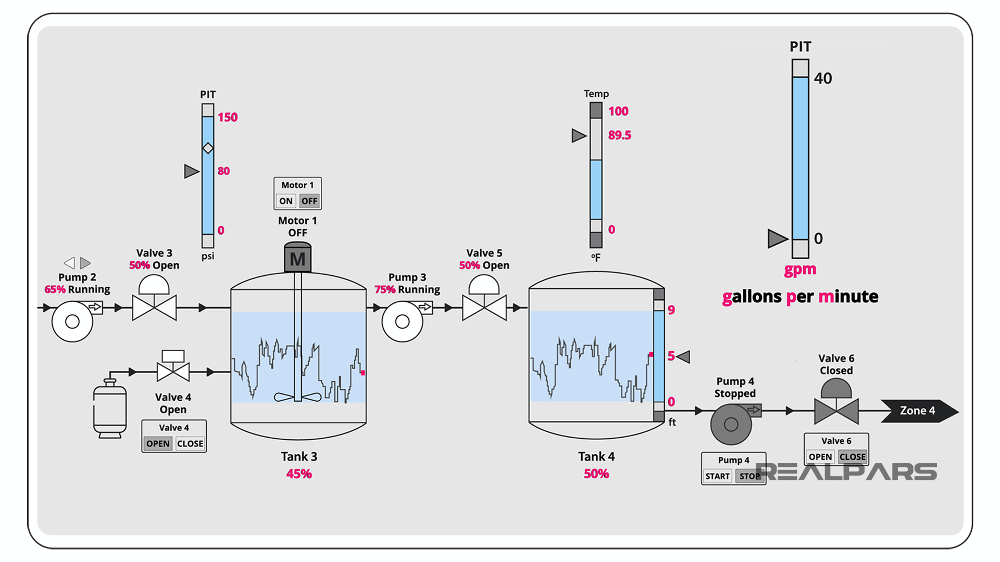

Advanced monitoring and control solutions for wastewater treatment facilities, implemented by systems integration experts with over four decades of experience.

Wastewater treatment facilities face unique challenges in monitoring and controlling complex biological and chemical processes. Our SCADA systems provide comprehensive monitoring and control capabilities for all aspects of wastewater treatment, from preliminary treatment to final discharge, ensuring regulatory compliance and operational efficiency.
Modern wastewater treatment requires precise control of multiple processes working in concert. Our SCADA solutions integrate seamlessly with existing equipment and provide the real-time data and control capabilities needed to optimize treatment processes, reduce energy consumption, and ensure consistent treatment results.
With over four decades of experience as systems integrators, we understand the specific requirements of wastewater treatment facilities and have developed solutions that address these challenges while providing the flexibility to adapt to changing conditions and regulatory requirements. Our team works closely with facility operators to ensure that each system is tailored to their specific needs.
Our SCADA systems monitor and control preliminary treatment processes, including screening, grit removal, and flow equalization. This ensures efficient removal of large solids and grit, protecting downstream equipment and optimizing treatment efficiency.
Biological treatment is the heart of wastewater treatment. Our SCADA systems provide comprehensive monitoring and control of biological processes, including aeration control, nutrient removal, and sludge management, ensuring optimal treatment performance.
Effective clarification is essential for solids separation. Our SCADA systems monitor clarifier performance, including sludge blanket levels, effluent turbidity, and sludge pumping, enabling operators to optimize clarifier operation and maintain effluent quality.
Disinfection is critical for protecting public health and the environment. Our SCADA systems provide precise control of disinfection processes, including chemical dosing, UV intensity, and contact time, ensuring effective pathogen reduction while minimizing chemical usage.
With over four decades of experience in systems integration, we have the expertise to design, implement, and maintain wastewater SCADA systems that meet the specific needs of your facility. Our team of engineers and technicians works closely with facility operators to ensure that each system is tailored to their unique requirements and provides the functionality needed for efficient operation.
We understand the challenges faced by wastewater treatment facilities and have developed solutions that address these challenges while providing the flexibility to adapt to changing conditions and regulatory requirements. Our comprehensive approach includes system design, hardware and software integration, installation, commissioning, training, and ongoing support.
Learn More About GBL DataReady to enhance your wastewater treatment facility with advanced SCADA technology? Contact our team of experts to discuss your specific requirements and learn how our systems integration expertise can help you improve operational efficiency, ensure regulatory compliance, and protect the environment.